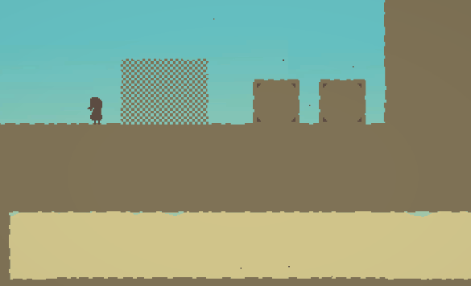
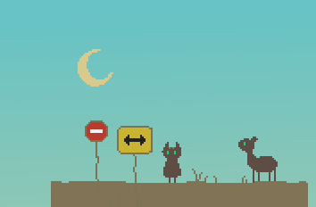

-게임 소개-

Reverie는 빈 공간을 다루는 것에 관한 퍼즐 게임입니다.

반대로 물체를 빈 공간처럼 다룰 수도 있죠.
장소마다 각자의 기믹이 존재합니다.

다양한 캐릭터들과 함께 Reverie 세계의 비밀을 알아내세요.
데모 버전을 플레이해 보세요!
- Windows (64 bit) -
- MAC -
* MAC의 경우 다운받은 .app 파일에 아래 명령어를 실행해 주세요.
chmod -R 777 (appname).app
- 데모 버전 플레이 영상 -
스포일러 주의: 해당 영상을 보는 것은 데모 플레이 경험을 손상시킬 수 있습니다.
가급적 데모 플레이 시작 이후 시청을 권장드립니다.
본 게임은 민경효에 의해 제작되었습니다.